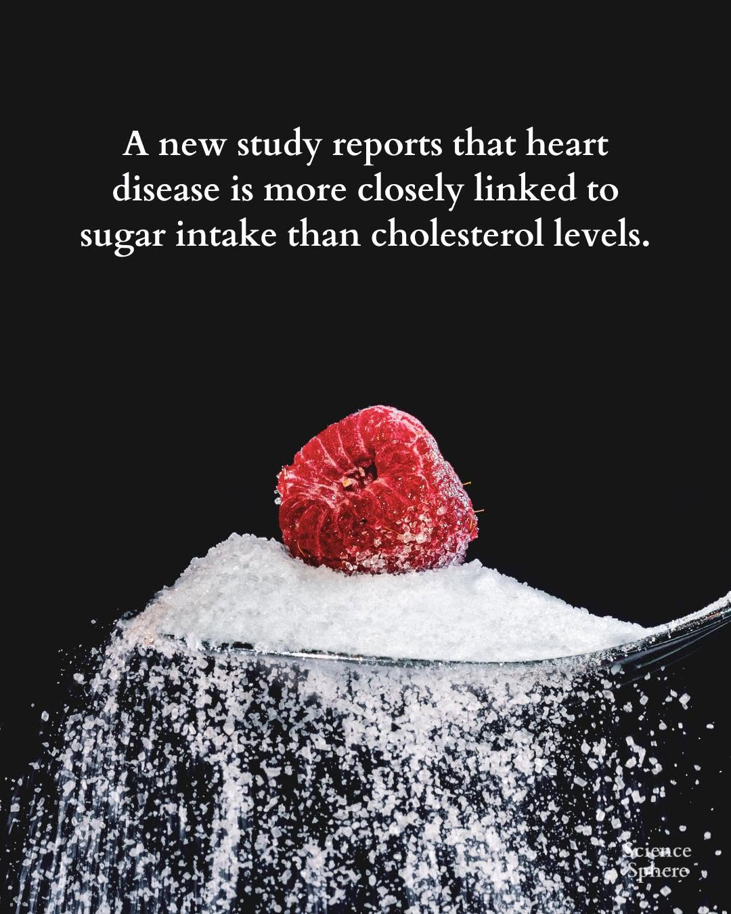

This result is from the famous Harvard Nurses Study, which we’ve talked about many times. This is what is called a prospective cohort study. It shows associations. It does not prove causality.
#refinedsugarHD #hnsHD #harvardHD
🍨 Too Much Sugar May Be Worse for Your Heart Than High Cholesterol, Study Finds!
A large-scale 15-year study published in JAMA Internal Medicine has revealed that consuming high amounts of added sugar dramatically raises the risk of dying from heart disease—even for people who aren’t overweight.
Researchers found that individuals who got 25% or more of their daily calories from added sugar were over twice as likely to die from heart-related conditions compared to those who consumed less than 10%. This heightened risk was consistent regardless of weight, age, sex, physical activity level, or cholesterol readings.
The primary source of added sugar? Sugar-sweetened beverages—including sodas and fruit drinks—which make up more than one-third of the added sugar in the average American diet. Other major contributors include desserts, candy, and sweetened cereals.
Scientists believe excess sugar may elevate blood pressure and cause the liver to release harmful fats into the bloodstream—both key contributors to cardiovascular disease.
The American Heart Association recommends limiting added sugar to 6 teaspoons (100 calories) per day for women and 9 teaspoons (150 calories) for men. But just one can of soda can hit—or exceed—those limits.
Experts suggest making small, sustainable swaps: opt for fruit-infused sparkling water instead of soda, and reach for naturally sweet options like whole fruit to reduce your risk of heart disease.
Follow Science Sphere for regular scientific updates
REFERENCE 📄
Yang Q, Zhang Z, Gregg EW, Flanders WD, Merritt R, Hu FB. Added Sugar Intake and Cardiovascular Diseases Mortality Among US Adults. JAMA Intern Med. 2014;174(4):516–524.
